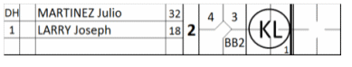

In the event that the pitcher replaces the designated hitter or any other fielder when attacking, the replacement must be noted with a vertical line to indicate that the pitcher came to bat in that inning.
|
 |
In the example, a vertical line is drawn to indicate that pitcher LARRY Joseph began to bat in the third inning for MARTINEZ Julio, who was the Designated Hitter. The change is not noted on the other sheet, as the fielding positions have not changed. In this case, the offensive stats for the pitcher will be written in the correspondent line above, but his own defensive stats will be written in his correspondent defensive boxes in the lower part of the score sheet, beside his pitcher credits’ boxes. |